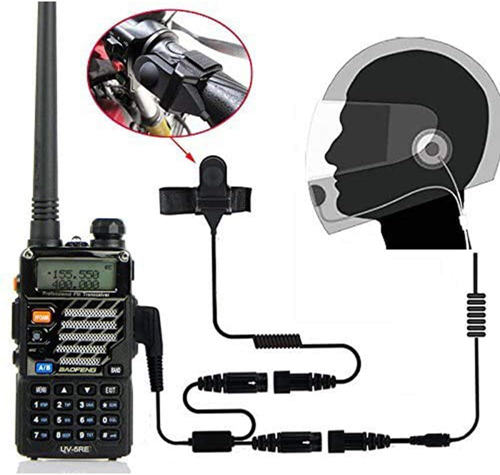
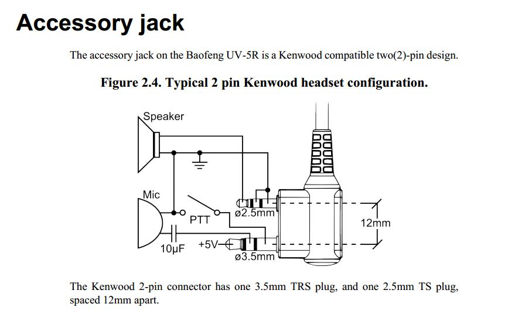

4 Ham Radio
4.1 Baofeng UV-5R
I use a Baofeng UV-5R since several years back. The reason for this is that they are easy to get in the US, the cost is only 40-50 USD, so it’s not a biggie to get a replacement, keep a backup, and buy spare batteries. The Baofeng UV-5R handset uses the a Kenwood compatible two-pin plug; one plug is 2.5mm and the other is 3.5mm and are 12mm apart. Because of this, I have a fair bit of head sets with push-to-talk (PTT) buttons to choose from. The one I have is 25-35 USD from Amazon. I place the PTT button on my left riser near my break handle, because that way I can easily transmit also in active air and while thermalling. I have the headset and the mic mounted permanently on my helmet.
On launch, I put on my helmet, let the cable hang down before I close my jacket, then I connect it together with the PTT cable that I run down the riser thought the carabiner, and at the end I plug it to the radio that is on my flight deck. I then turn on the radio to confirm that I can hear “Frequency mode” or “Channel mode” that the radio says when turned on. After this, I do a formal radio check.


Comment: According to Wikipedia, “the model variant Boafeng UV5R HT” is no longer sold in Germany and Switzerland and may not be used there.
4.2 CRT France FP 00 (temporary)
I got a CRT France FP 00 radio in France 2023 when I was on the Saint Hilare launch realizing my the battery in my Baofeng radio was dead. I got it for 47 EUR from the Prevol shop at launch. I was lucky because it had the same headset connection as my Baofeng, so it worked with my PTT headset. It a Baofeng clone with the same configuration and menu items(*). The battery and the charger, including the plug to the charging dock is different though. I haven’t tried, but it also looks like CHIRP (programming via cable) is not support (yet), e.g. https://chirp.danplanet.com/issues/9894.
(*) I walked through the menu on the CRT-FP00 and the Baofeng UV-5R step by step and the menu entries were identical.


4.3 Yaesu FT-270R (legacy)
In the past, I used my Yaesu FT-270R radio with a custom-build push-to-talk (PTT) headset. It worked great, but once in a while, and always during flying trips, the headset connection to the radio broke. The problem with the Yaseu FT-270R is that it has a screw-in plug (see picture). The purpose of that is so that the plug does not fall out, but the problem was that slowly you end up twisting the cable too much so that the cables inside break. It happened twice to me at launch during flying trips. I loved the custom-made Glidecom Cloudbase Headset, but it was custom built by a guy in Oregon and delivery was flaky at best, so this solution became unreliable in the long run. I never managed to find another nicec headset, so I switched to a cheaper, lower-quality Baofeng radio.